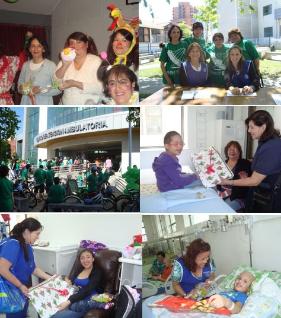

Becas Académicas
El objetivo de este proyecto es beneficiar a jóvenes recuperados de cáncer con becas académicas, para lograr la continuidad de estudios pendientes y obtener una profesión futura y reinserción en la sociedad.
Las becas podrán atender a los jóvenes con estudios universitarios, técnicos profesionales o de centros de formación técnica. Así también podrán tener alcances parciales y en ocasiones especiales, totales.
El año 2018 se otorgaron un total de 28 becas de las cuales 15 corresponden alumnos antiguos y 13 son para alumnos que inician sus estudios superiores este año 2018.
Para que estas becas sean bien utilizadas, sean objetivas y sean supervisadas, elaboramos requisitos básicos y similares a los utilizados en el resto de las instituciones que entregan estos beneficios.
VER INSTRUCTIVO DE POSTULACIÓN 2018 (formato PDF) Para mayor información o en caso de cualquier duda, consultar a:
- Carolina Escudero P.
- Asistente del Directorio
- Fundación Niño y Cáncer
- fundacion@ninoycancer.cl
- Fono: 22170821- 22170820
Voluntariado
Este voluntariado trabaja en el Hospital Luis Calvo Mackenna. Su objetivo es acoger a los padres e hijos, brindándoles apoyo y acompañamiento. Las voluntarias informan a los padres cual es la misión que cumplen con los niños del hospital además de difundir los beneficios entregados a todos los niños por la Fundación Niño y Cáncer, tales como: Cena de navidad, Taller de Ski para niños amputados, Encuentro con la Montaña para niños en seguimiento, Campeonato de Futbolito y Porristas.

El Voluntariado Hospitalario en Concepción
Su presidenta es la Sra. Astri Aravena. Desarrollan labores en el Policlínico de Oncología del Hospital Regional de Concepción. Tiene a cargo la administración de los tres Departamentos de Acogida de la Fundación. Mantienen los departamentos con su mobiliario completo y en buenas condiciones. Además orientan a la familia beneficiadas del uso de estos.
Montaña de la Alegría
La Montaña de la Alegría es una actividad única, que permite a los niños entretenerse sanamente y entrega la posibilidad de compartir de una forma distinta a pequeños que viven una situación similar, lo que se traduce además, en una terapia para el alma, ya que sienten la confianza de contar sus experiencias y compartirlas.
La Montaña de la Alegría se está realizando con mucho éxito desde el año 2002 y se divide en dos etapas:
PRIMERA ETAPA
Taller de esquí
Participaron seis jóvenes chilenos, dos uruguayos y un argentino todos amputados de una extremidad inferior como secuela del cáncer. Los extranjeros fueron alojados en el Hotel Kennedy a su llegada a Santiago. Permanecieron del 25 al 29 de agosto alojados en la Escuela de Montaña del Ejército, el Hotel Portillo les facilitó los equipos y tickets de andarivel y SkiTotal los vistió con todo el equipo necesario para realizar la actividad.
La Fundación cuenta con los equipos especiales para amputados y al contratar un instructor para cada participante, esto les permite aprender rápidamente a esquiar. Como todos los años el instructor de esquí Patricio Morandé, que también sufrió una amputación producto del cáncer siendo muy joven, fue el encargado de elegir y contratar los instructores.
En esta oportunidad también participaron la Dra. Ana Laura Rodriguez de Uruguay y la Enfermera Elena Sarabia de Argentina, quienes fueron acompañadas durante la semana por las voluntarias de la Fundación y Sonrisólogas, Susana Alegría y Carola Garabano.
SEGUNDA ETAPA
Encuentro con la montaña
Esta etapa se realizó del 1 al 4 de septiembre en la Escuela de Montaña del Ejército y participaron 87 niños de todos los Hospitales de Chile que cuentan con Servicio de Oncología Infantil. Para la organización y realización de todas las actividades contamos con 16 monitores de la Universidad de Santiago, los que confeccionaron un programa muy entretenido, dividiendo a los niños en 3 alianzas (roja, amarilla y verde).
Se realizaron diversas competencias en las que participaron activamente 3 militares por alianza. Las actividades finalizaron el miércoles en la noche con una fiesta en la que se coronó a los reyes. Además se entregaron medallas, diplomas y recuerdos a todos los participantes.